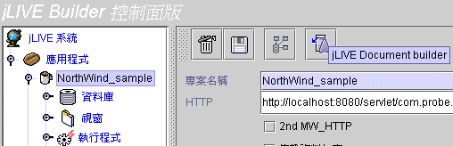
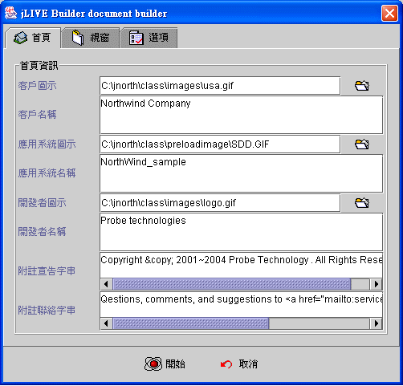
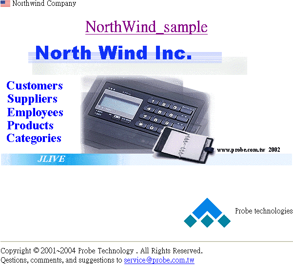
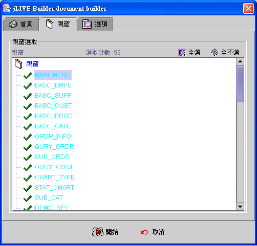
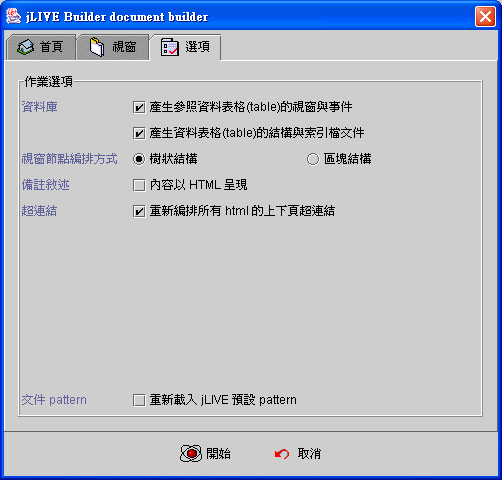
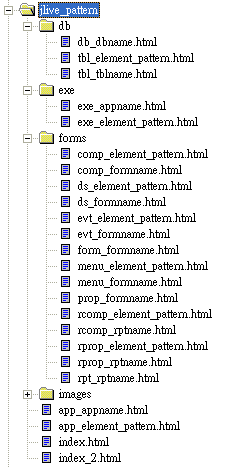

|
14. 應用程式技術文件 (Application Technical Document)
jLIVE Document Builder™ 應用程式技術文件產生系統，使用時需另購授權，否則只能輸出範例應用程式 Northwind_sample 的技術文件。 jLIVE Document Builder™ 應用程式技術文件系統，執行時將以 HTML 產生以下文件
第一次產生該應用系統文件時，jLIVE Document Builder™ 系統會根據作業系統 (OS) 語系，將該語系文件格式 (document pattern) 建立至應用程式系統檔案目錄中。所有產生的文件將會根據文件格式 (document pattern) 輸出，文件格式 (document pattern) 是 HTML 檔案格式，設計師在充分了解結構後，可以自行編排輸出格式。 jLIVE Document Builder™ 文件產生時，系統內部會將每個視窗畫面快照 (snapshot) 存成 jpg 檔案，並提供視窗畫面圖片檔超連結 (map) 至元件屬性設定文件。由於系統快速運作及使用資源量大，當系統記憶體資源不足時，系統會出現記憶體不足的訊息視窗，並立即執行資源回收 (garbage collection) ，系統在獲得足夠記憶體後，繼續作業。 在大系統文件產生時，設計師可以按下取消鍵，取消作業，已經產出的文件不會刪除，但上下頁的超連結，由於尚未作業完成所以可能不正確。
執行技術文件產生系統 (execute jLIVE Document Builder™)
在 jLIVE Builder™ 控制面版上選擇應用程式，並於右側應用程式設定面版上，按下
jLIVE document builder 按鍵。設定作業的首頁、視窗、選項屬性後，按下開始鍵即開始文件輸出作業。 
技術文件首頁屬性設定 (technical document home page properties)
技術文件首頁，提供類似文件的封面。在首頁中貼上客戶、應用系統及開發公司(者)的名稱及圖示 (icon)
，並在應用系統名稱及圖示上加入超連結至系統規格技術文件頁 (index2.html)。首頁編排、對齊方式及其他資訊可以自行更改 pattern 檔。 
範例首頁如下： 
技術文件視窗屬性設定 (technical document form properties)
選擇要輸出技術文件的視窗模組。設計師可以只選取部份修改的視窗模組輸出，如果設定 [重新編排所有 HTML 上下頁超連結] 屬性，系統作業時會按應用程式控制面版的視窗節點次序，連結相關的上下頁。

技術文件選項設定 (technical document options properties)
選項設定包括是否產生資料庫檔案結構，參照資料表格的視窗與事件•••。由於查詢資料庫及掃瞄設計的 HTML 及重新編排 HTML 超連結的作業，皆很耗時且須大量資源，沒有更動的部份可以選擇更新不輸出。

jLIVE Document Builder™ 系統，預設各語系的文件格式檔 (document pattern)
，安裝於 jLIVE /doc/jlive_pattern 目錄下。
各語系有其相對文件格式檔 (document pattern)，系統找不到相對文件格式檔時，採用 default
目錄。第一次產生該應用系統文件時，LIVE Document Builder™ 系統會根據作業系統 (OS) 語系，將該語系文件格式
(document pattern) 建立至應用程式系統檔案目錄中。 
文件格式檔 (document pattern) 計有四個目錄，24 個 HTML 檔。每個輸出的文件皆根據這些文件格式檔的定義，擷取資料及格式化。資料庫以 db_dbname.html 定義，例如：資料庫別名為 jNorthDB，其相對產生的文件為 db_jNorthDB.html，而在此資料庫中每個資料表格 (table) 則以 tbl_tblname.html 定義，例如：資料表格名稱為 Prodcut，其相對產生的文件為 jNorthDB_Product.html。在產生資料表格 (table) 文件中，表格結構 (table structure) 及索引 (index) 資訊如何配置，則根據 tbl_element_pattern.html 中的定義。 所以設計師可以根據檔案命名，得知每個文件是由那些文件格式檔所產生。其中以 element_pattern 結尾的格式檔，都是屬於細部描述及重覆使用的格式，例如：編輯方塊元件 (edit component) 的輸出格式，只有一式位於 comp_element_pattern.html。 以編輯 HTML 的編輯器開啟文件格式檔 (document pattern) ，最上層以 HTML表格 將文件定位於瀏覽器中央並限制其寬度為 600 ，設計師可以更改為適合使用的寬度。所有格式檔 HTML 以書籤 (book marker) 標記所要填入的資訊，書籤標記的名稱不可更改，但可刪除，設計師可以自行刪除一些認為不需輸出的資訊，以得到較簡潔的文件。除了書籤標記外，圖檔、文字、排列方式與對齊，皆為可更改項目，亦可自行以 HTML 加入其他資訊。 書籤標記命名皆以 p_ 起頭。以 _clone 為結尾的書籤標記，表示在此 HTML 區段會因為資料需要，而重覆以相同定義產出，例如：db_dbname.html 中，每個資料表 (table) 列示的書籤標記為 p_tblname_clone。以 _annex 為結尾的書籤標記，表示在此 HTML 區段會插入由相對名稱格式檔 _element_pattern 中，以 _pat 為結尾的書籤標記所定義的資訊與格式。例如：tabl_tblname.html 中，關於索引的資訊其書籤標記為 p_index_annex ，而其所插入的資訊， 以書籤標記 p_index_pat 定義於 tbl_element_pattern.html 中。
Copyright © 2001~ 2004 Probe Technology . All Rights Reserved. Questions, comments, and suggestions to Service@probe.com.tw |